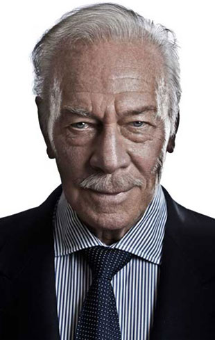

(di Stieg Larsson)
il libro
(di Marcella Gangemi)
Mai titolo fu più azzeccato. Uomini che
odiano le donne è il primo volume della trilogia Millennium, scritta da
Stieg Larsson e che conquista piano piano il lettore, pagina dopo
pagina (letteralmente). Se dovessi descrivere in pochi aggettivi questo
primo volume direi che è avvincente, complesso, accattivante e ricco di
suspense (benché il tutto decolli a metà libro). Il ritmo inizialmente
è molto lento tanto da rallentare la lettura, ma successivamente
diviene serrante come solo un thriller può esserlo, lo stile è così
fluido che la grande mole del romanzo passa in secondo piano, ottime le
informazioni puramente “pratiche” che l’autore distribuisce in modo
strategico così da aiutare il lettore a costruire il background anche
per i personaggi minori (niente viene inserito per caso, ma tutto ha
una sua logica). La grandiosità di questo romanzo sono proprio i
personaggi, costruiti con una magistrale abilità, paradossalmente così
agli antipodi rispetto alle persone comuni da risultare quasi reali
(come la coppia dei protagonisti, davvero male assortita ma ben
riuscita proprio grazie a questa peculiarità), gli intrighi
dell’intreccio, che concedono quel tocco di noir all’atmosfera, rendono
l’introspezione così realistica che ogni emozione da loro provata
penetra fin nella pelle di chi legge. L’insieme di tutto ciò ha dato
vita ad una realtà viva che obbliga il lettore a pretendere,
stuzzicando la sua curiosità, a cercare la fine della storia
proseguendo così con i successivi volumi nei quali ci aspetteranno
ulteriori sviluppi e colpi di scena.
(di Niels Arden Oplev)
il libro
(di Alessandro Bavuso)
Il film Uomini che odiano le donne, del
regista danese Niels Arden Oplev, prima trasposizione cinematografica
dell'omonimo best seller di Stieg Larsson, si è rivelato essere davvero
fedele al romanzo. La sceneggiatura, infatti, mantiene tutti gli
elementi cardine dell’opera di Larsson, rivelandosi capace di mantenere
la struttura narrativa originale. Il film, molto ben fatto
tecnicamente, si caratterizza per una regia di grande qualità e una
buona recitazione. I due protagonisti Michael Nyqvist nel ruolo di
Mikael Blomkvist e, soprattutto, Noomi Rapace nella veste di Lisbeth
Salander, spiccano per l’eccellente prova interpretativa. I due attori
perfettamente calati nei rispettivi ruoli si sono rivelati, infatti,
capaci di interpretare egregiamente anche la psicologia dei personaggi.
Tuttavia, il vero punto di forza della pellicola è rappresentato dalla
fotografia che riprende con grande intensità le atmosfere del libro,
facendone rivivere le emozioni che lo stesso trasmette. L'opera
del regista danese riesce, dunque, nella non facile impresa di
coinvolgere pienamente lo spettatore, riportando su pellicola, con
vivacità e con violenza, la profondità del romanzo di Larsson. Questa,
infatti, riesce a riprodurre su pellicola la poetica intrinseca al
libro, trasmettendone non solo il messaggio di denuncia sociale, ma
anche riproducendone l'aspetto più intimo che nel libro riesce a
toccare profondamente il lettore.
Personaggi
HENRIK VANGER

(di Marco Lambertini)
Henrik Vanger pur essendo uno dei
personaggi laterali o secondari di Uomini che odiano le donne è fra
questi un motore centrale per lo svolgimento della storia. Per due
motivi. Il primo, perché è grazie a lui che si incontrano per la prima
volta Lisbeth e Mikael. Il secondo perché è attraverso il suo
personaggio che prende il via la storia principale del libro,
l’indagine per scoprire chi ha “assassinato” la nipote di Vanger
Harriet. Vediamo di conoscere meglio il personaggio: Henrik Vanger è un
industriale in pensione. È vedovo ed è stato sposato con una
donna ebrea che ha contribuito a fare fuggire dalla Germania durante la
seconda guerra mondiale. Questo gli valse il disprezzo dei suoi
fratelli nazisti, Gottfried e Harald. È proprietario della maggior
parte dell’isola di Hebdy (luogo di fantasia) dove si svolge gran parte
del libro.
Descrizione fisica del personaggio: "Sembrava sorprendentemente
vigoroso per un vecchio di ottantadue anni: Un corpo filiforme con una
faccia levigata dalle intemperie, un corpo robusto e folti capelli
grigi pettinati all'indietro ... Aveva i baffi, e portava occhiali
stretti cerchiati d’acciao sottile”.
All’inizio del libro ha 82 anni, per anni è stato il oltre che
proprietario anche L’amministratore delegato della Vanger Corporation
fino a che non si è dimesso in seguito alla scomparsa di sua nipote,
Harriet Vanger. Assume Mikael Blomkvist per cercare di risolvere
l’enigma della scomparsa della nipote che crede uccisa e fatta
scomparire. All’inizio del libro facciamo subito conoscenza con la sua
ossessione Sulle pareti del suo studio pendono 43 quadri con
incorniciati dei fiori secchi esotici. I primi sette sono stati regali
di compleanno di Harriet, gli altri arrivati ogni anno dopo la sua
scomparsa in forma anonima. Dopo aver inutilmente provato a mantenere
aperto il caso anche grazie alla propria forza economica, il vecchio
Henrik si rivolge a Mikael che ha seguito ed apprezzato, anche se
lontano dalle proprie idee, durante il processo Wannerstrom, precedente
caso seguito da Blomqvist. Henrik Vanger pur di far proseguire Mikael
nell’indagine, che ormai è la sua ossessione, diventa anche sponsor e
sostenitore primario della Rivista Millenium, dove Mikael lavora, che
si trova in acque difficili dopo la condanna nell’affare Wannerstrom.
Vanger conosce Lisbeth, perchè si rivolge all’agenzia dove lei lavora
per fare indagini riservate su Mikael Blomqvist, indagini che vengono
svolte proprio da Lisbeth. Circa alla metà del libro Henrik Vanger
rischia di morire in seguito ad un infarto e piano piano il suo
personaggio si defila, rimanendo comunque sempre presente, fino al
finale che finalmente pone fine alla sua ricerca della verità.
MIKAEL BLOMKVIST

(di Giuseppina Ranzini)
Mikael Blomkvist è un personaggio che
conquista subito l'immaginario femminile: quarantenne di successo,
affascinante, determinato, colto, con un profondo senso della
giustizia, ma anche trasgressivo. Finisce a letto con tutte le donne
che incontra, oltre ad avere una relazione quasi ventennale con la sua
amica-collega, Erika Berger sposata con Greger Backman. Mikael
Blomkvist è un giornalista che si occupa prevalentemente di economia e
gode di un discreto successo nel mondo dell'editoria, grazie ad alcune
inchieste "scomode" redatte e pubblicate sulla rivista Milleniium da
lui codiretta. Vive e lavora sull'isola di Södermalm, un quartiere
molto trendy e anche un po’ bohemien della capitale svedese situato
nella parte meridionale della città vecchia. Mikael deve superare un
brutto colpo sul piano personale e professionale: la condanna per
diffamazione sull'equivoco finanziere Wennerström. Per riscattarsi, il
reporter accetta un incarico molto particolare e impegnativo
commissionato da un magnate dell'industria, Henrik Vanger, che, a quasi
quarant'anni dall'improvvisa scomparsa di sua nipote Harriet, vuole
scoprire la verità sulla sorte della ragazza. Mikael si mette al
lavoro, ma procede senza troppa convinzione, per via della complessità
del caso. Accetta l'incarico, inconsapevole di essere affiancato dalla
giovane Lisbeth Salander, una freak, squatter-hacker di innegabile
ingegno, ma psicologicamente disturbata a causa dei suoi trascorsi.
L'incontro tra Mikael e Lisbet sarà determinante. Mikael e Lisbeth sono
due personaggi agli antipodi, eppure complementari: riflessivo lui,
impulsiva lei: due personaggi fuori dagli schemi, due outsider e per
questo destinati alla solitudine. Mikael e Lisbeth si incrociano quasi
per caso e si ritrovano legati in una relazione fuori dagli schemi
dalla quale Lisbeth ne uscirà con il cuore spezzato. Lei è molto
provata dall'incontro con Mikael, non tanto per l’attrazione sessuale
che sente nei suoi confronti, ma perché, dopo tanto tempo, riuscirà a
provare un’istintiva fiducia nei confronti di un'altra persona.